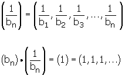
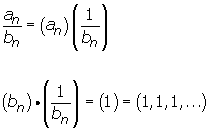

Sucesiones
Sucesiones
Se llama sucesión a un conjunto de números dispuestos uno a continuación de otro.
a1, a2, a3 ,..., an
3, 6, 9,..., 3n
Los números a1, a2 , a3 , ...; se llaman términos de la sucesión.
El subíndice indica el lugar que el término ocupa en la sucesión.
El término general es an es un criterio que nos permite determinar cualquier término de la sucesión.
Determinación de una sucesión
Por el término general
an= 2n-1
a1= 2 ·1 - 1 = 1
a2= 2 ·2 - 1 = 3
a3= 2 ·3 - 1 = 5
a4= 2 ·4 - 1 = 7
1, 3, 5, 7,..., 2n-1
No todas las sucesiones tienen término general. Por ejemplo, la sucesión de los números primos:
2, 3, 5, 7, 11, 13, 17, 19, 23,...
Por una ley de recurrencia
Los términos se obtienen operando con los anteriores.
Escribir una sucesión cuyo primer término es 2, sabiendo que cada término es el cuadrado del anterior.
2, 4, 16, ...
Sucesión de Fibonacci:
1, 1, 2, 3, 5, 8, 13, 21, 34, 55, 89, 144, 233, 377, 610, 987, 1597, 2584, ...
Los dos primeros términos son unos y los demás se obtienen sumando los dos términos anteriores.
Operaciones con sucesiones
Dadas las sucesiones an y bn:
an= a1, a2, a3, ..., an
bn= b1, b2, b3, ..., bn
Suma de sucesiones
(an) + (bn) = (an + bn)
(an) + (bn) = (a1 + b1, a2 + b2, a3 + b3, ..., an + bn)
Propiedades
1. Asociativa:
(an + bn) + cn = an + (bn + c n)
2. Conmutativa:
an + bn = bn + a n
3. Elemento neutro
(0) = (0, 0, 0, ...)
an + 0 = an
4. Sucesión opuesta
(-an) = (-a1, -a2, -a3, ..., -an)
an + (-an) = 0
Diferencia de sucesiones
(an) - (bn) = (an - bn)
(an) - (bn) = (a1 - b1, a2 - b2, a3 - b3, ..., an - bn)
Producto de sucesiones
(an) · (bn) = (an · bn)
(an) · (bn) = (a1 · b1, a2 · b2, a3 · b3, ..., an · bn)
Propiedades
1. Asociativa:
(an · bn) · c n = an · (bn · c n)
2. Conmutativa:
an · bn = bn · a n
3. Elemento neutro
(1) = (1, 1, 1, ..)
an · 1 = an
4. Distributiva respecto a la suma
an · (bn + c n) = an · bn + an · c n
Sucesión inversible
Una sucesión es inversible o invertible si todos sus términos son distintos de cero. Si la sucesión bn es inversible, su inversa es:

Cociente de sucesiones
Sólo es posible el cociente entre dos sucesiones si el denominador es inversible.

Tipos de sucesiones
Sucesiones monótonas

Sucesiones estrictamente crecientes
Se dice que una sucesión es estrictamente creciente si cada término es mayor que el anterior.
an+1 > an
2, 5, 8, 11, 14, 17,...
5 > 2; 8 > 5; 11 > 8; ...
Sucesiones crecientes
Se dice que una sucesión es creciente si cada término es mayor o igual que el anterior.
an+1 ≥ an
2, 2 , 4, 4, 8, 8,...
2 ≥ 2; 4 ≥ 2; 4 ≥ 4; ...
Sucesiones estrictamente decrecientes
Se dice que una sucesión es estrictamente decreciente si cada término de la sucesión es menor que el anterior.
an+1 < an
1, 1/2, 1/3, 1/4, 1/5, 1/6,...
1/2 < 1; 1/3 < 1/2 ; 1/4 < 1/3; ...
Sucesiones decrecientes
Se dice que una sucesión es decreciente si cada término de la sucesión es menor o igual que el anterior.
an+1 ≤ an
Sucesiones constantes
Se dice que una sucesión es constante si todos su términos son iguales, an= k.
an = an+1
5, 5, 5, 5, ...
Sucesiones acotadas inferiormente
Una sucesión está acotada inferiormente si todos sus términos son mayores o iguales que un cierto número K, que llamaremos cota inferior de la sucesión.
an ≥ k
A la mayor de las cotas inferiores se le llama extremo inferior o ínfimo .
Si el ínfimo de una sucesión es uno de sus términos se le llama mínimo.
Toda sucesión sucesión monótona creciente y acotada superiormente es convergente y su límite es igual al supremo de la sucesión.
Sucesiones acotadas superiormente
Una sucesión está acotada superiormente si todos sus términos son menores o iguales que un cierto número K', que llamaremos cota superior de la sucesión.
an ≤ k'
A la menor de las cotas superiores se le llama extremo superior o supremo.
Las sucesiones convergentes son las sucesiones que tienen límite finito.
Si el supremo de una sucesión es uno de sus términos se llama máximo.
Toda sucesión sucesión monótona decreciente y acotada inferiormente es convergente y su límite es igual al ínfimo de la sucesión.
Sucesiones acotadas
Una sucesión se dice acotada si está acotada superior e inferiormente. Es decir si hay un número k menor o igual que todos los términos de la sucesión y otro K' mayor o igual que todos los términos de la sucesión. Por lo que todos los términos de la sucesión están comprendidos entre k y K'.
k ≤ an ≤ K'
Sucesiones convergentes

Límite = 0

Límite = 1
Sucesiones divergentes
Las sucesiones divergentes son las sucesiones que no tienen límite finito.

Límite = ∞
Sucesiones oscilantes
Las sucesiones oscilantes no son convergentes ni divergentes. Sus términos alternan de mayor a menor o viceversa.
1, 0, 3, 0 ,5, 0, 7, ...
Sucesiones alternadas
Las sucesiones alternadas son aquellas que alternan los signos de sus términos. Pueden ser:
Convergentes
1, −1, 0.5, −0.5, 0.25, −0.25, 0.125, −0.125,..
Tantos los términos pares como los impares tienen de límite 0.
Divergentes
1, 1, 2, 4, 3, 9, 4, 16, 5, 25, ...
Tantos los términos pares como los impares tienden de límite +∞.
Oscilantes
−1, 2, −3, 4 ,−5, ..., (−1)n n
an = 1, 2, 3, 4, 5, ...n
Es creciente.
Está acotada inferiormente
Cotas inferiores: 1, 0, -1, ...
El mínimo es 1.
No está acotada superiormente.
Divergente
bn = -1, -2, -3, -4, -5, ... -n
Es decreciente.
Está acotada superiormente
Cotas superiores: -1, 0, 1, ...
El máximo es -1.
No está acotada inferiormente.
Divergente
cn = 2, 3/2, 4/3, 5/4, ..., n+1 /n
Es decreciente.
Está acotada superiormente
Cotas superiores: 2, 3, 4, ...
El máximo es 2.
Está acotada inferiormente
Cotas inferiores: 1, 0, -1, ...
El ínfimo es 1.
Convergente, límite = 1.
dn= 2, -4, 8, -16, 32, ..., (-1)n-1 2n
No es monótona.
No está acotada.
No es convergente ni divergente.